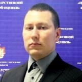

Телефон
8-910-905-47-17
Эл. почта
mordakin.vn@yandex.ru
Владимир Мордакин
Ruby on Rails developer
Личная информация
Образование
Рязанская государственная сельскохяйственная акаденимия им. П.А. Костычева.
Очная аспирантура в Рязанской государственной сельскохозяйственной академии им. П.А. Костычева.
Присуждена научная степень "Кандидат сельскохозяйственных наук".
Опыт работы
Июль 2006 - ноябрь 2017
Ведущий инженр / заместитель начальника отдела
- Обработка заявок о постановке на государственный кадастровый учет
- Государственный кадастровый учет объектов недвижиомости
- Проверка деятельности структурный подразделений
- Выявление и исправление технических ошибок в базе ГКН
- Верификация и нормализация сведений ГКН и ЕГРП
- Гармонизация сведений ГКН и ЕГРП
Ноябрь 2017 - н.в.
Заместитель начальника отдела
- Сбор и анализ информации, необходимой для проведения государственной кадастровой оценки
- Исправление ошибок в перечне объектов недвижимости
- Подготовка отчетов об итогах государственной кадастровой оценки
Навыки
Курсы
GoodProgrammer.ru